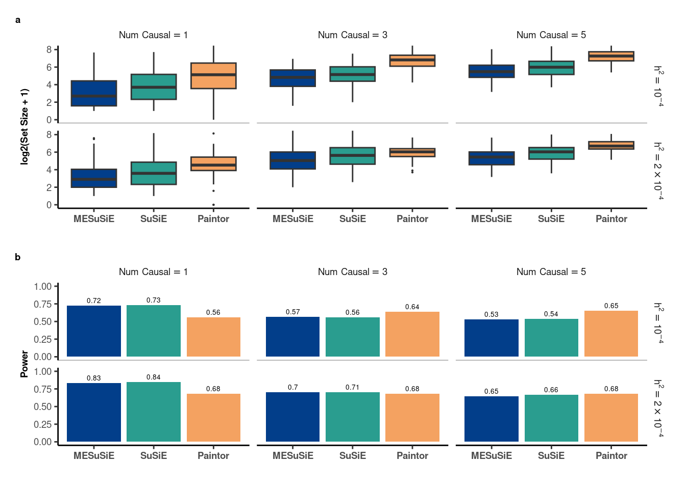
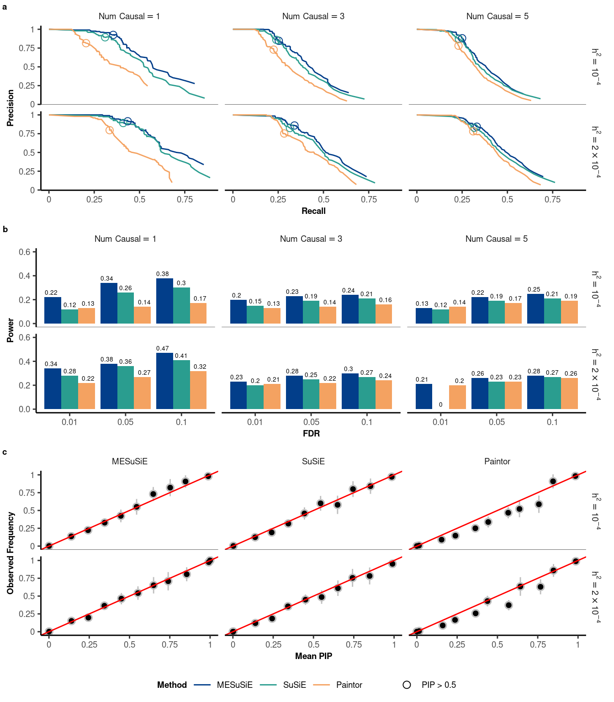
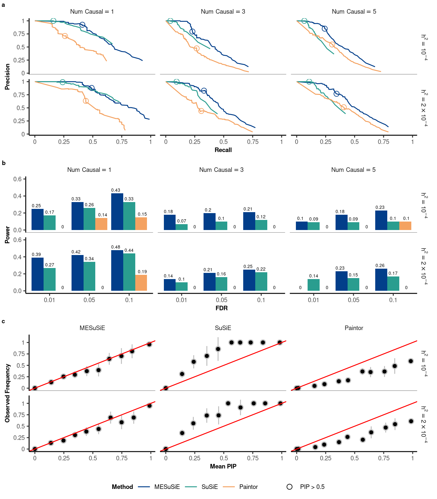
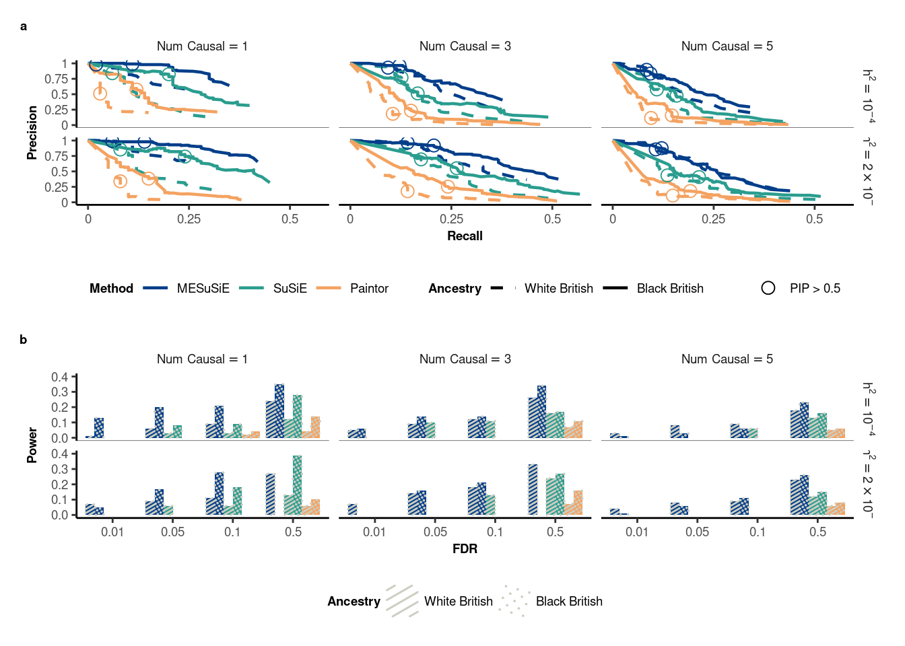
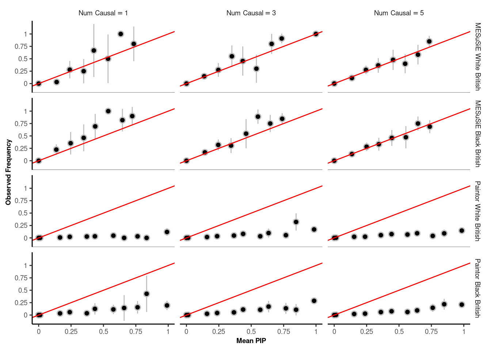

Baseline Setting 50% Shared Causal SNP
Note : all the code and analysis reproduced here can
be found in Repository
Feature of 95% credible set
library(ggplot2)
library(ggrepel)
library(grid)
library(egg)
library(dplyr)
library(forcats)
library(gridExtra)
library(patchwork)
library(ggpattern)
library(data.table)
library(ggpubr)
source("/net/fantasia/home/borang/Susie_Mult/Revision_Round_1/Simulation/091223/code/Function/utility.R")
###################
#
#Set Size & Power
#
###################
load("/net/fantasia/home/borang/Susie_Mult/Revision_Round_1/Simulation/091223/res_summary/shared_50_baseline.RData")
upper_limit<-round(all_Set_data_dataframe%>%filter(Method == "Paintor",causal_num=="Num~Causal == 5 ",h2=="~h^2 == 10^-4")%>%summarise(upper = quantile(Size,0.75))%>%pull(upper))+50
p_size_box<-Set_Size_fun(all_Set_data_dataframe%>%mutate(Size = log2(Size+1)),upper_limit = log2(upper_limit))
p_size_box<-p_size_box+ ylab("log2(Set Size + 1)")
p_power_bar<-Set_Power_fun(set_power_summary)
size_power<-p_size_box/p_power_bar+plot_annotation(tag_levels = 'a')&
theme(plot.tag = element_text(size = 7,face="bold"))
size_power
Past versions of unnamed-chunk-1-1.png
PIP of signal in at least one ancestry
##########################################################
#
# Either ancestry
# PR curve | FDR Power | Calibration
#
##########################################################
###################
#
#ROC
#
###################
either_all_ROC_data_dataframe<-either_all_ROC_data_dataframe%>%mutate(Method = fct_relevel(Method,"MESuSiE","SuSiE","Paintor"))
p_ROC_Either<-ROC_shared_fun(either_all_ROC_data_dataframe)
###################
#
#FDR&Power
#
###################
power_upper_limit<-FDR_Power_either%>%filter(FDR!=0.5)%>%ungroup(Method,h2,causal_num)%>%summarise(upper_limit = min(ceiling(max(Power)*10)/10+0.1,1))%>%pull(upper_limit)
p_FDR_Power_Either<-FDR_Power_shared_fun(FDR_Power_either%>%filter(FDR!=0.5))+ylim(0,power_upper_limit)
####################
#
#PIP calibration
#
####################
PIP_calibration_either_byh2<-create_obs_frq_byh2(data_all%>%select(Signal,h2,MESuSiE_Either,SuSiE_Either, Paintor_PIP),c(1,2,3),c("MESuSiE_Either","SuSiE_Either","Paintor_PIP"))
PIP_calibration_either_byh2<- PIP_calibration_either_byh2%>%mutate(Method = fct_recode(Method, "MESuSiE" = "MESuSiE_Either","SuSiE" = "SuSiE_Either","Paintor" = "Paintor_PIP"))%>%mutate(Method = fct_relevel(Method,"MESuSiE","SuSiE","Paintor"))
p_calibration_byh2<-PIP_calibration_shared_byh2_fun(PIP_calibration_either_byh2)
ROC_FDR_Power_Calibration_Either_Plot<-ggarrange(p_ROC_Either,p_FDR_Power_Either,p_calibration_byh2,nrow = 3,ncol=1,
common.legend = TRUE, legend="bottom",labels = c("a","b","c"),font.label=list(color="black",size=7))
ROC_FDR_Power_Calibration_Either_Plot
Past versions of unnamed-chunk-2-1.png
PIP of shared signal
##########################################################
#
# Shared Signal
# PR curve | FDR Power | Calibration
#
##########################################################
###################
#
#ROC
#
###################
shared_all_ROC_data_dataframe<-shared_all_ROC_data_dataframe%>%mutate(Method = fct_relevel(Method,"MESuSiE","SuSiE","Paintor"))
p_ROC_shared<-ROC_shared_fun(shared_all_ROC_data_dataframe)
###################
#
#FDR&Power
#
###################
power_upper_limit<-FDR_Power_shared%>%filter(FDR!=0.5)%>%ungroup(Method,h2,causal_num)%>%summarise(upper_limit = min(ceiling(max(Power)*10)/10+0.1,1))%>%pull(upper_limit)
p_FDR_Power_shared<-FDR_Power_shared_fun(FDR_Power_shared%>%filter(FDR!=0.5))+ylim(0,power_upper_limit)
####################
#
#PIP calibration
#
####################
PIP_calibration_shared_byh2<-create_obs_frq_byh2(data_all%>%select(Signal,h2,MESuSiE_Shared,SuSiE_Shared, Paintor_PIP),c(3),c("MESuSiE_Shared","SuSiE_Shared","Paintor_PIP"))
PIP_calibration_shared_byh2<- PIP_calibration_shared_byh2%>%mutate(Method = fct_recode(Method, "MESuSiE" = "MESuSiE_Shared","SuSiE" = "SuSiE_Shared","Paintor" = "Paintor_PIP"))%>%mutate(Method = fct_relevel(Method,"MESuSiE","SuSiE","Paintor"))
p_calibration_shared_byh2<-PIP_calibration_shared_byh2_fun(PIP_calibration_shared_byh2)
ROC_FDR_Power_Calibration_shared_Plot<-ggarrange(p_ROC_shared,p_FDR_Power_shared,p_calibration_shared_byh2,nrow = 3,ncol=1,common.legend = TRUE, legend="bottom",labels = c("a","b","c"),font.label=list(color="black",size=7))
ROC_FDR_Power_Calibration_shared_Plot 
Past versions of unnamed-chunk-3-1.png
PIP of ancestry-specific signal
##########################################################
#
# Ancestry-specific Signal
# ROC | FDR Power | PIP calibration
#
##########################################################
###################
#
#ROC
#
###################
ancestry_all_ROC_data_dataframe <- ancestry_all_ROC_data_dataframe %>%
mutate(Method = as.character(Method))
split_list <- strsplit(ancestry_all_ROC_data_dataframe %>% pull(Method), " +")
ancestry_all_ROC_data_dataframe <- ancestry_all_ROC_data_dataframe %>%mutate(
Method = sapply(split_list, `[`, 1),
Ancestry = sapply(split_list, `[`, 2)
)%>%mutate(Method = fct_relevel(Method,"MESuSiE","SuSiE","Paintor"),Ancestry = fct_relevel(Ancestry, "WB","BB"))%>%mutate(Ancestry = fct_recode(Ancestry, "White British" = "WB" , "Black British" = "BB" ))
p_ROC_ancestry<-ROC_ancestry_fun(ancestry_all_ROC_data_dataframe)
###################
#
#FDR&Power
#
###################
FDR_Power_ancestry <- FDR_Power_ancestry %>% mutate(Method = as.character(Method))
split_list <- strsplit(FDR_Power_ancestry %>% pull(Method), " +")
FDR_Power_ancestry <- FDR_Power_ancestry%>%ungroup(h2,causal_num,Method) %>%mutate(
Method = sapply(split_list, `[`, 1),
Ancestry = sapply(split_list, `[`, 2)
)%>%mutate(Method = fct_relevel(Method,"MESuSiE","SuSiE","Paintor"),Ancestry = fct_relevel(Ancestry, "WB","BB"))%>%mutate(Ancestry = fct_recode(Ancestry, "White British" = "WB" , "Black British" = "BB" ))
power_upper_limit<-FDR_Power_ancestry%>%filter(FDR!=0.5)%>%summarise(upper_limit = min(ceiling(max(Power)*10)/10+0.1,1))%>%pull(upper_limit)
p_FDR_Power_ancestry<-FDR_Power_ancestry_fun(FDR_Power_ancestry%>%filter(FDR!=0.5))+ylim(0, power_upper_limit)
ROC_FDR_Power_ancestry<- (p_ROC_ancestry / p_FDR_Power_ancestry) +plot_annotation(tag_levels = 'a')&theme(plot.tag = element_text(size = 7, face = "bold"))
ROC_FDR_Power_ancestry<-ROC_FDR_Power_ancestry+ plot_layout(heights = c(1, 1))
ROC_FDR_Power_ancestry
Past versions of unnamed-chunk-4-1.png
Version
Author
Date
504f3a9
borangao
2023-10-09
####################
#
#PIP calibration
#
###################
PIP_calibration_ancestry<- PIP_calibration_ancestry%>%group_by(causal_num)%>%mutate(Method = fct_recode(Method, "MESuSiE White British" = "MESuSiE~WB", "MESuSiE Black British" = "MESuSiE~BB", "Paintor White British" = "Paintor~WB","Paintor Black British" = "Paintor~BB"))
levels(PIP_calibration_ancestry$Method)<-c(paste0("MESuSiE~","White~","British"),paste0("MESuSiE~","Black~","British"),paste0("Paintor~","White~","British"),paste0("Paintor~","Black~","British"))
p_calibration_ancestry<-PIP_calibration_ancestry_fun(PIP_calibration_ancestry)
p_calibration_ancestry
Past versions of unnamed-chunk-4-2.png
Version
Author
Date
504f3a9
borangao
2023-10-09
sessionInfo()R version 4.3.1 (2023-06-16)
Platform: x86_64-pc-linux-gnu (64-bit)
Running under: Ubuntu 20.04.6 LTS
Matrix products: default
BLAS: /usr/lib/x86_64-linux-gnu/openblas-pthread/libblas.so.3
LAPACK: /usr/lib/x86_64-linux-gnu/openblas-pthread/liblapack.so.3; LAPACK version 3.9.0
locale:
[1] LC_CTYPE=en_US.UTF-8 LC_NUMERIC=C
[3] LC_TIME=en_US.UTF-8 LC_COLLATE=en_US.UTF-8
[5] LC_MONETARY=en_US.UTF-8 LC_MESSAGES=en_US.UTF-8
[7] LC_PAPER=en_US.UTF-8 LC_NAME=C
[9] LC_ADDRESS=C LC_TELEPHONE=C
[11] LC_MEASUREMENT=en_US.UTF-8 LC_IDENTIFICATION=C
time zone: America/New_York
tzcode source: system (glibc)
attached base packages:
[1] grid stats graphics grDevices utils datasets methods
[8] base
other attached packages:
[1] ggpubr_0.6.0 data.table_1.14.8 ggpattern_0.4.3-3 patchwork_1.1.1
[5] forcats_1.0.0 dplyr_1.1.2 egg_0.4.5 gridExtra_2.3
[9] ggrepel_0.9.1 ggplot2_3.4.2 workflowr_1.7.0
loaded via a namespace (and not attached):
[1] gtable_0.3.1 xfun_0.39 bslib_0.5.0
[4] processx_3.8.0 rstatix_0.7.2 gridpattern_0.5.4-1
[7] callr_3.7.3 vctrs_0.6.2 tools_4.3.1
[10] ps_1.7.2 generics_0.1.3 proxy_0.4-27
[13] tibble_3.2.1 fansi_1.0.5 highr_0.10
[16] pkgconfig_2.0.3 KernSmooth_2.23-21 lifecycle_1.0.3
[19] compiler_4.3.1 farver_2.1.1 stringr_1.5.0
[22] git2r_0.32.0 munsell_0.5.0 getPass_0.2-2
[25] carData_3.0-5 httpuv_1.6.11 class_7.3-20
[28] htmltools_0.5.5 sass_0.4.6 yaml_2.3.7
[31] later_1.3.1 pillar_1.9.0 car_3.1-2
[34] jquerylib_0.1.4 whisker_0.4.1 tidyr_1.3.0
[37] classInt_0.4-9 cachem_1.0.8 abind_1.4-5
[40] tidyselect_1.2.0 digest_0.6.30 stringi_1.7.12
[43] sf_1.0-13 purrr_1.0.1 labeling_0.4.2
[46] cowplot_1.1.1 rprojroot_2.0.3 fastmap_1.1.1
[49] colorspace_2.1-0 cli_3.6.1 magrittr_2.0.3
[52] utf8_1.2.3 e1071_1.7-13 broom_1.0.5
[55] withr_2.5.1 scales_1.2.1 promises_1.2.0.1
[58] backports_1.4.1 rmarkdown_2.22 httr_1.4.6
[61] ggsignif_0.6.4 memoise_2.0.1 evaluate_0.18
[64] knitr_1.39 rlang_1.1.1 Rcpp_1.0.11
[67] DBI_1.1.3 glue_1.6.2 rstudioapi_0.14
[70] jsonlite_1.8.3 R6_2.5.1 units_0.8-2
[73] fs_1.6.2